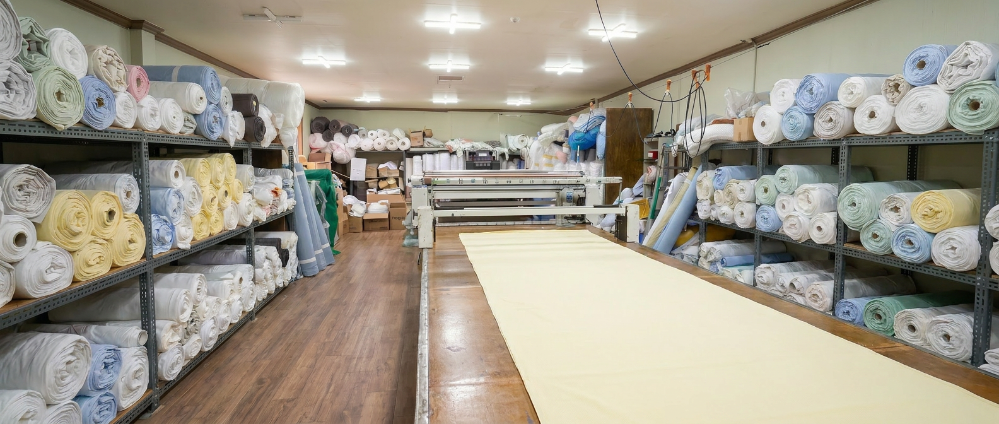
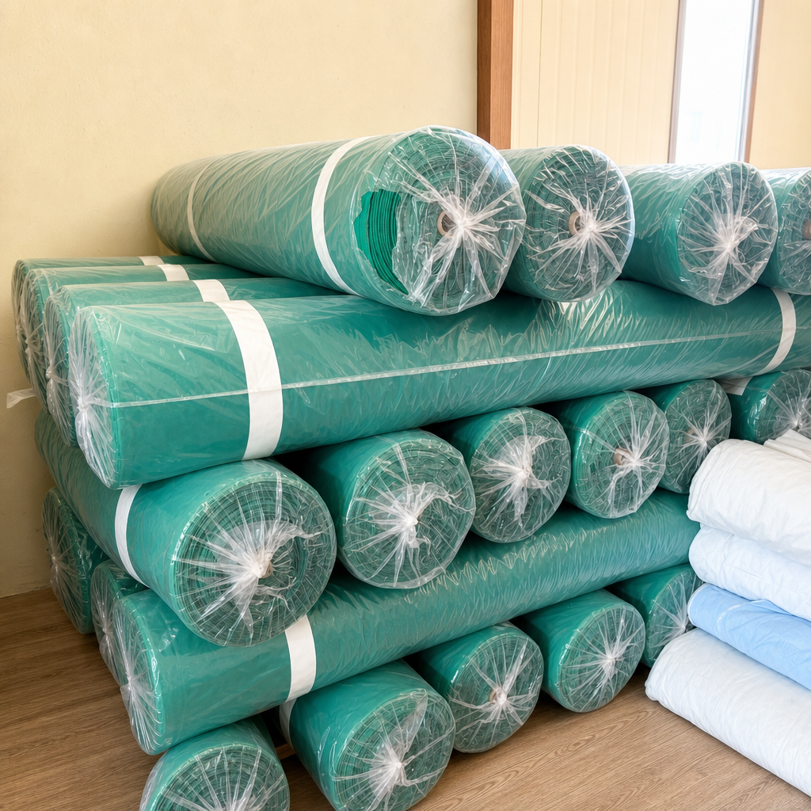
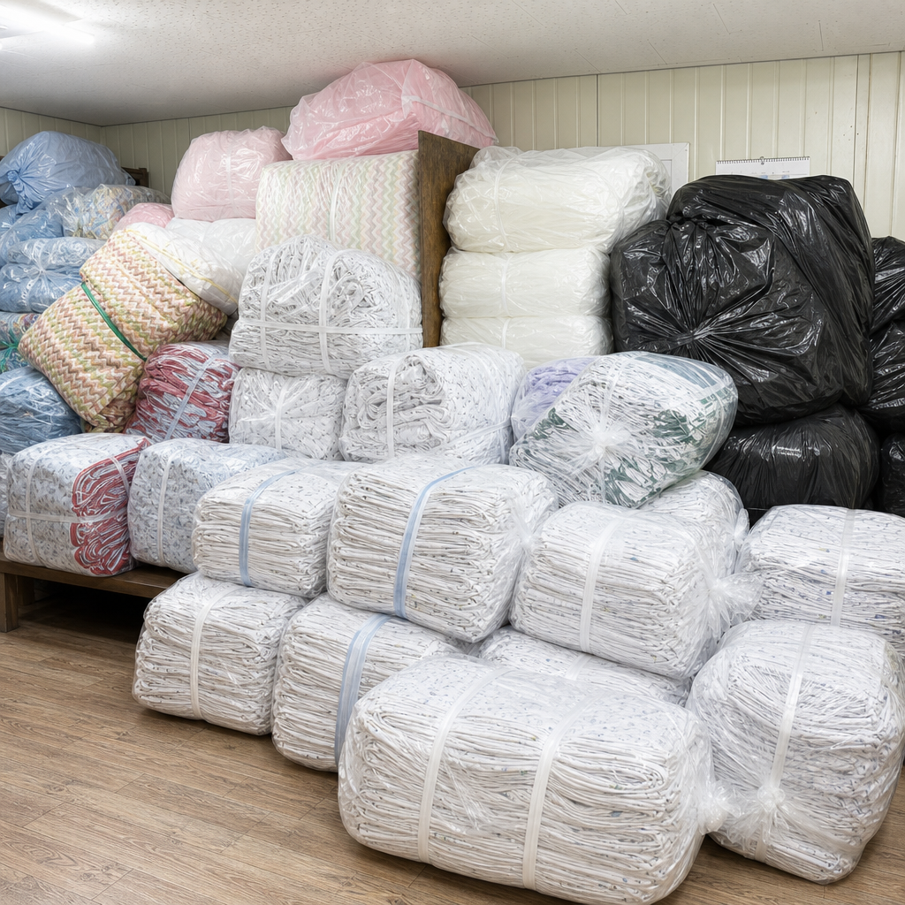
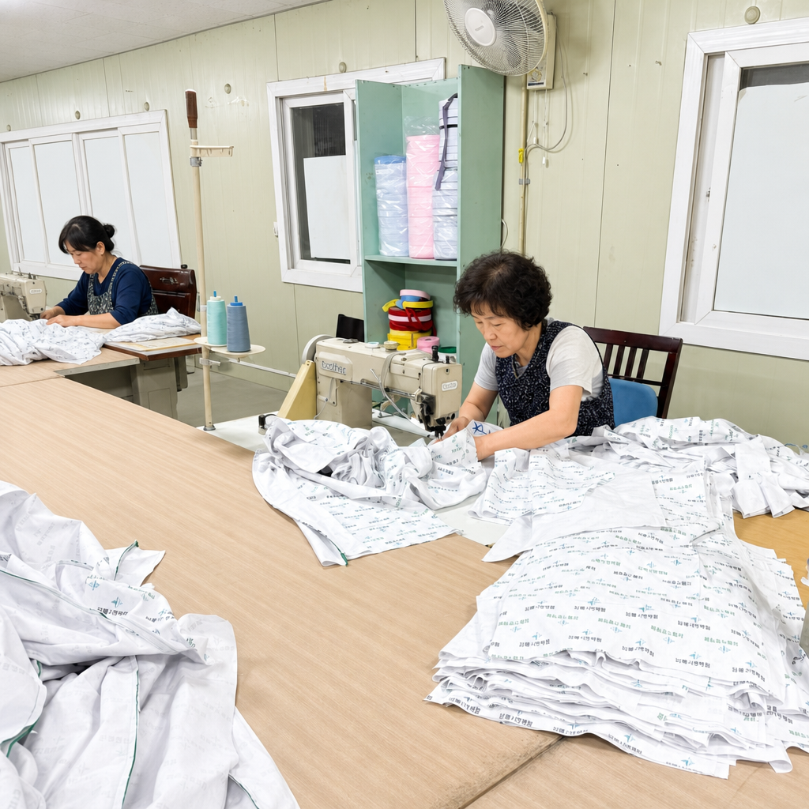
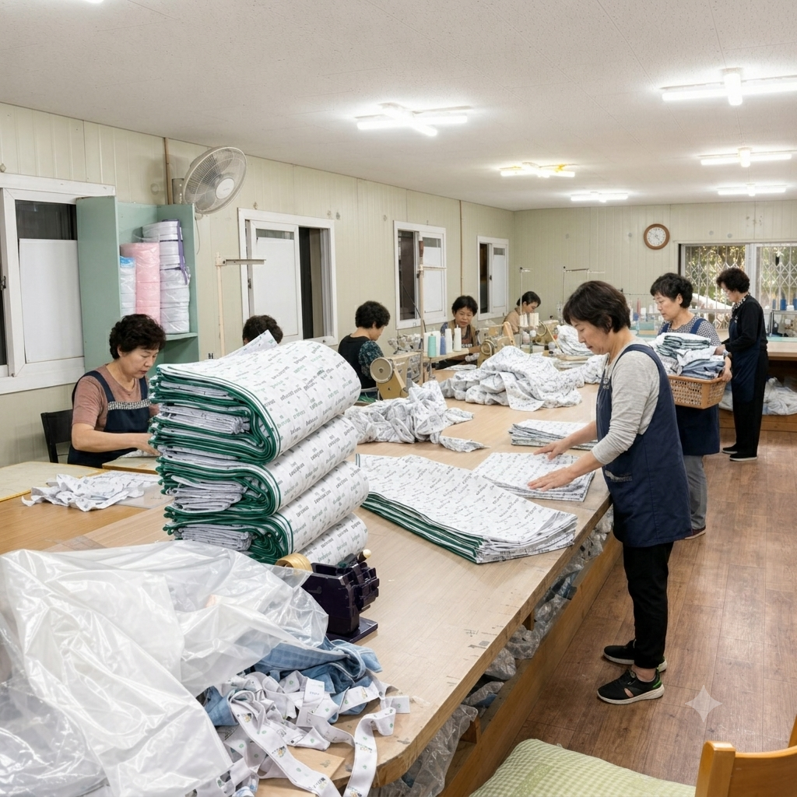
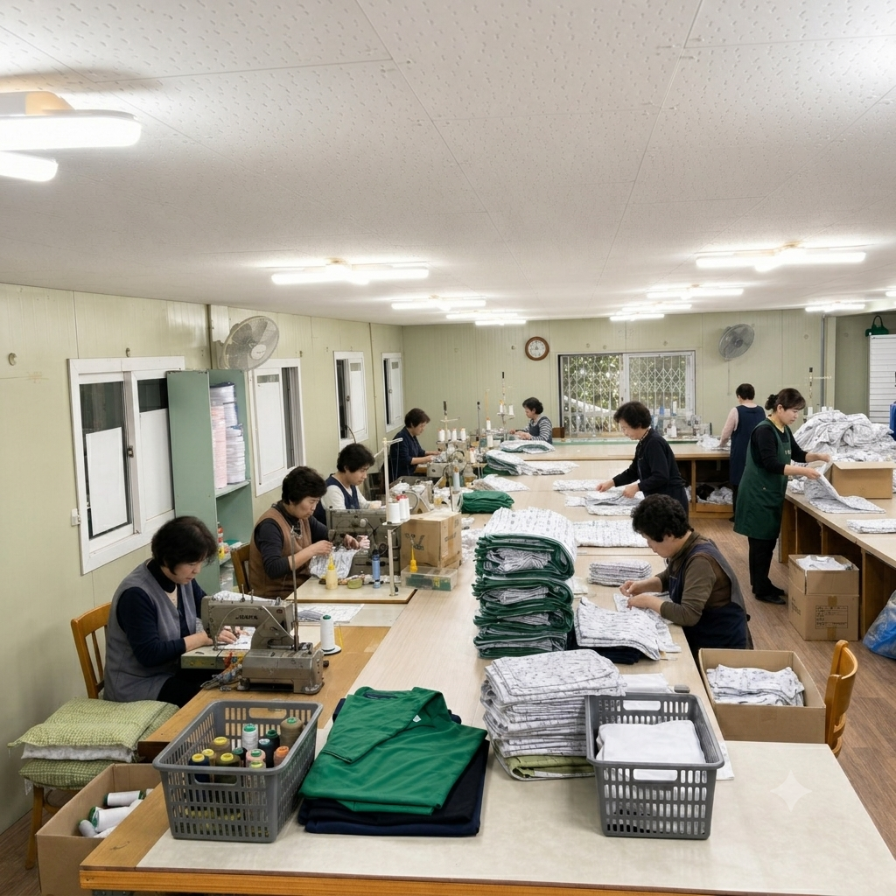

체계적인 제조 인프라
엄격한 생산 관리에 따라 운영되는 당사의 제조 가동 현장입니다.






세린종합상사는 중간 유통 과정 없이 원단 재단부터 완제품 봉제까지 국내 자체 공장에서 직접 생산하여 전국 의료기관 및 요양원에 직공급하고 있습니다. 40년 제조 경험을 바탕으로 안정적인 조달을 약속합니다.

세린종합상사는 40년 이상 병원 전용 의류 및 메디컬 린넨 제품만을 전문적으로 연구하고 개발해 온 제조 전문 기업입니다.
기획 및 원단 선별부터 재단, 재봉, 검수 등 생산 전 공정을 하청 없이 100% 국내 자체 공장에서 원스톱으로 처리하는 인하우스 인프라를 구축하고 있습니다. 엄격한 제조 매뉴얼을 바탕으로 전국 종합병원 및 요양 시설에 검증된 품질의 완제품을 적기에 조달하고 있습니다.
의료 환경에 부합하는 철저한 규격 관리와 규격화된 정밀 재단을 고수하여 제품 편차가 없고, 대형 상업용 세탁 건조에도 형태 변형이 적어 경제성이 우수합니다.
단순 수주 방식에 그치지 않고, 담당 실무자가 현장을 직접 방문하여 침상 치수 및 사용 환경을 원스텝으로 실측·진단한 후 최적의 시안을 제안합니다. 공급 이후 발생할 수 있는 품질 요청 사항에도 제조사가 직접 책임 대응하므로 전국의 수많은 중대형 의료기관이 신뢰하고 오랜 기간 거래 관계를 유지하고 있습니다.
세린종합상사는 수십 년간 수많은 의료기관에 납품하며 축적된 현장 피드백을 바탕으로, 병원 세탁 환경에서 대형 건조기와 고온 살균을 거쳐도 뒤틀림이 적고 환자분들이 장시간 착용 시에도 피부 자극이 없는 가장 최적화된 원단만을 선별하여 사용합니다.
잦은 세탁에 강한 수축 방지 · 통기성이 좋은 안심 면 혼방 원사
엄격한 생산 관리에 따라 운영되는 당사의 제조 가동 현장입니다.





세린종합상사에서 공급하는 규격 품목 및 조달 대상 리스트입니다.
품목 및 예상 수량 기반 1차 유선 안내를 진행합니다.
담당자가 병원을 직접 방문하여 치수 실측 및 원단을 확인합니다.
공장 직판가 기준 견적을 산출하고 최종 계약을 체결합니다.
공장 직접 생산 후 지정 기일에 맞춰 안전하게 직배송합니다.
안정적인 물류 공급과 투명한 원가 관리를 지원합니다. 대표 유선 회선 또는 이메일을 통해 실무 요청 사항을 전달 주시면 신속히 안내해 드리겠습니다.
실시간 정확한 원가 산출과 일정 산정을 위해 유선 연락 전 아래 항목을 미리 확인 주시면 원활합니다.